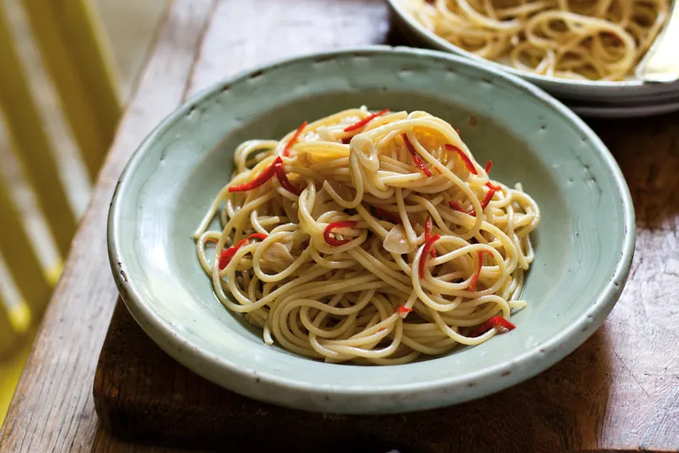

Spaghetti aglio, olio e peperoncino

This classic spaghetti aglio, olio e peperoncino recipe is the ultimate fast food –
in the time it takes to cook the pasta you can have the sauce cooked and ready for the table.
In his version, we add anchovy fillets which he finely chops and dissolves in olive oil.
ingredients
- 450g of spaghetti
- 60ml of olive oil
- 6 garlic cloves, peeled and finely chopped
- 1 red chilli, chopped
- 4 anchovy fillets, finely chopped or 1 tablespoon colatura
- 1 tablespoon salt
steps
- Cook the pasta in a large pan of boiling salted water for 5–6 minutes or until al dente
- Meanwhile, heat the oil in a large saucepan and fry the garlic and chilli gently, without letting them brown.
At this point you could add the anchovies and let them dissolve in the oil, or add the colatura. This sauce doesn’t take more than 5 minutes to prepare
- Lift the cooked pasta from the water, using pasta tongs, and mix directly into the sauce. I wouldn’t choose to add cheese here, but you can, only if you really insist